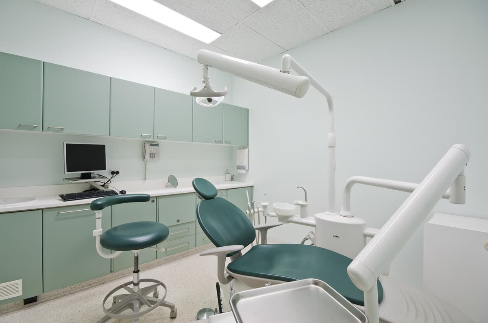

Antalya Muratpaşa'da Sağlıklı Gülüşler İçin Güvenilir Diş Hekimliği
Dent Laracity Ağız ve Diş Sağlığı Polikliniği olarak, modern tedavi yöntemlerimizle ağız ve diş sağlığınızı korumak için buradayız. Hastalarımızın konforunu ön planda tutan yaklaşımımızla hizmet veriyoruz.
★★★★★ 4.9 · 427 Google yorumu
